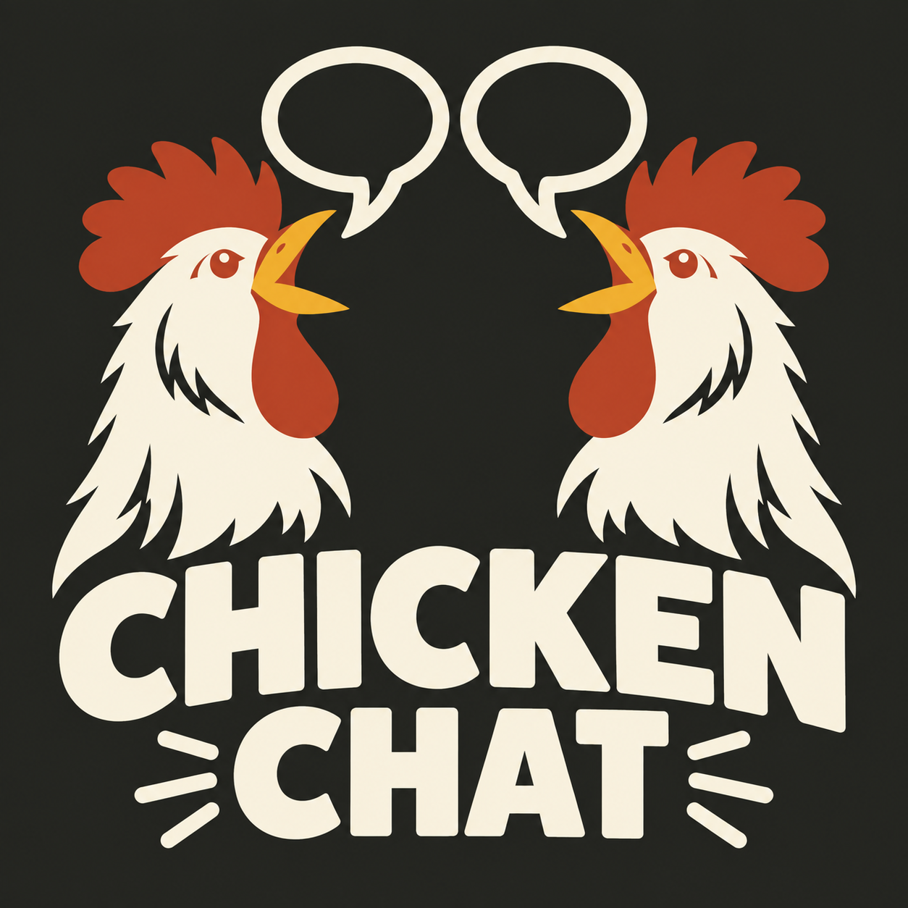

Chicken Chat controller
Feeder Bin Bot
Firmware for the ACEBOTT ESP32 Max prototype shield.
- Build
- Feeder Bin Bot
- Flash
- 4 MB
- Mode
- DIO / 40 MHz
Connect the board only when the installer asks.

Chicken Chat Field firmwareBrowser flasher ESP32
Load the right firmware straight from Chrome or Edge. No installer, command line, or guesswork.
01
Match the name on the controller before connecting.
Chicken Chat controller
Firmware for the ACEBOTT ESP32 Max prototype shield.
Connect the board only when the installer asks.
Chicken Chat controller
Firmware for the bin shaker prototype shield.
Connect the board only when the installer asks.
02
Three steps. Keep the USB cable connected until the install is complete.
Select Install on the matching card above.
Allow browser access to the connected ESP32.
Do not unplug or close the page during the flash.
Fresh install: Flashing replaces the firmware and may erase settings stored on the controller.